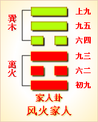

<!DOCTYPE html PUBLIC "-//W3C//DTD XHTML 1.0 Transitional//EN" "http://www.w3.org/TR/xhtml1/DTD/xhtml1-transitional.dtd">

<html xmlns="http://www.w3.org/1999/xhtml">
<head>
<meta content="text/html; charset=utf-8" http-equiv="Content-Type"/>
<title>周易第三十七卦：家人�?风火家人 巽上离下原文解释翻译-周易-国学�?/title>
<meta content="周易,家人�?风火家人,巽上离下" name="keywords"/>
<meta content="周易,家人�?风火家人,巽上离下，周易第三十七卦：家人卦 风火家人 巽上离下解释翻译�?（风火家人）巽上离下 《家人》：利女贞�?初九，闲有家，悔亡�?六二，无攸遂，在中馈，贞吉�?九三，家人嗃□，悔厉吉；妇子嘻嘻，终吝�?六四，富家，大吉�?九五，王假有�? name="description"/>
<link href="css.css" media="screen" rel="stylesheet" type="text/css"/>
</head>
<body>
<div class="gxlayout">
</div>
<div class="gxlayout">
<div class="ihead">
<div class="title"><a>周易</a></div>
<ul class="more fl">
<li>当前位置:<a>国学梦首�?/a> &gt; <a>国学经典</a> &gt; <a>经部</a> &gt; <a>四书五经</a> &gt; <a>周易</a> &gt;  周易第三十七卦：家人�?风火家人 巽上离下原文解释翻译</li>
</ul>
</div>
<div class="gxbl fl">
<div class="latitle">

<h1>周易第三十七卦：家人�?风火家人 巽上离下</h1>
<div class="lainfo"><span>作者：佚名</span> <span>全集�?a>周易</a></span> <span>来源：网�?/span> <span>[<a rel="nofollow" target="_blank">挑错/完善</a>]</span></div>
</div>
<div class="lacontent">
<div class="clearfix"></div>
<!--<!-- allowfullscreen="" frameborder="0" height="36" src="http://www.ximalaya.com/swf/sound/yellow.swf?id=1382600&amp;auto=true" width="260"></iframe>-->
<p style="text-align:center"></p>
<p style="text-align:center"><a>周易第三十七卦详�?/a></p>
<p style="text-align:center"><a>第三十七卦初九爻详解</a>　<a>第三十七卦六二爻详解</a>　<a>第三十七卦九三爻详解</a></p>
<p style="text-align:center"><a>第三十七卦六四爻详解</a>　<a>第三十七卦九五爻详解</a>　<a>第三十七卦上九爻详解</a></p>
<p><strong><a target="_blank">周易</a>第三十七�?家人 风火家人 巽上离下</strong></p>
<p>家人：利女贞�?/p>
<p>彖曰：家人，女正位乎内，男正位乎外，男女正，天地之大义也。家人有严君焉，父母之谓也。父父，子子，兄兄，弟弟，夫夫，妇妇，而家道正;正家而天下定矣�?/p>
<p>象曰：风自火出，家人;君子以言有物，而行有恒�?/p>
<p>初九：闲有家，悔亡。象曰：闲有家，志未变也�?/p>
<p>六二：无攸遂，在中馈，贞吉。象曰：六二之吉，顺以巽也�?/p>
<p>九三：家人嗃嗃，悔厉�?妇子嘻嘻，终吝。象曰：家人嗃嗃，未失也;妇子嘻嘻，失家节也�?/p>
<p>六四：富家，大吉。象曰：富家大吉，顺在位也�?/p>
<p>九五：王假有家，勿恤吉。象曰：王假有家，交相爱也�?/p>
<p>上九：有孚威如，终吉。象曰：威如之吉，反身之谓也�?/p>
<p><strong><a href="37_家人�?html" target="_blank">家人�?/a>卦象，风火家人卦的象征意�?/strong></p>
<p>家人卦是异卦相叠，下卦为离，上卦为巽。离为火，巽为风。火使热气上升，成为风。一切事物皆应以内在为本，然后延伸到外。发生于内，形成于外�?/p>
<p>喻先治家而后治天下，家道正，天下安乐�?/p>
<p>从另一个角度来看，家人卦是由巽和离组成的。离为火，火可以做饭;巽为风，无处不到。离下巽上，意味着人们用火做成饭，全家人吃了饭之后，像风一样到处去活动，各干其事，故本卦命名为家人�?/p>
<p>家人卦在<a href="36_明夷�?html" target="_blank">明夷�?/a>之后，《序》卦中这样说道：“伤于外者必反于家，故受之以家人。”明夷卦谈的是从政做官或在外做事受到了伤害，现在应该返回家庭�?/p>
<p>寻求安定�?/p>
<p>《象》中这样解释本卦：风自火出，家人;君子以言有物而行有恒。这里指出：家人卦的卦象是离(�?下巽(�?上，为风从火出之表象，象征着外部的风来自于本身的火，就像家庭的影响和作用都产生于自己内部一样。君子应该特别注意自己的一言一行，说话要有根据和内容，行动要有准则和规矩，不能朝三暮四和半途而废�?/p>
<p>家人卦所要表达的宗旨就是诚威治业，其属于下下卦。《象》中这样来断此卦：一朵鲜花镜中开，看着极好取不来，劝君休把镜花恋，卦若逢之主可怪�?/p>
<p>【家人卦卦象释义�?/p>
<p>此卦卦名为家人。甲骨文中，“家”字下方的“豕”字表示的是猪，猪在屋中便是最早的“家”的含义。怎么家里没有人而只有猪�?原来，远古人类在择穴而居的时代，便已经开始驯养野猪了。当时人虽然住在洞穴中，但是给猪却盖了一个猪圈，其主要目的是为了防止其逃跑和被别人偷走，并且饲养也方便。后来人类离开山里赶着猪群(当然，还有羊群与牛群�?来到平原居住时，便不单为猪建造了猪圈，还给自己也建了房屋。据有些学者考证，这一时期，人畜同居，房屋的中央便是猪圈。所以“家”字的概念便由猪窝变为人的居室了。上面的明夷卦代表受伤，人受伤后便会回到家中养伤，所以明夷卦之后是家人卦。这就是《序卦传》中所说的：“伤于外者必反于家，故受之以家人。”家人就是家里人，所以这一卦主要讲述家庭伦理道德方面的事情�?/p>
<p>家人卦卦象：家人卦的�?a target="_blank">�?/a>为四个阳爻两个阴爻，与下面的<a href="38_睽卦.html" target="_blank">睽卦</a>的卦画排列顺序正好相反，家人卦与睽卦互为覆卦�?/p>
<p>家人卦卦画：从卦象上分析，家人卦上卦为巽为风，下卦为离为火，风自火出便是家人卦的卦象。另外，<a href="57_巽卦.html" target="_blank">巽卦</a>又为木，<a href="30_离卦.html" target="_blank">离卦</a>为火，所以家人卦的卦象还有在木结构的房屋中生火的形象。房屋中有火，在<a target="_blank">冬天</a>才可以取暖，并且每天家里的人才能吃到熟食。所以相对于一个家庭而言，火灶在家中占有重要的地位�?/p>
<p>关键词：周易,家人�?风火家人,巽上离下</p>
<div class="clearfix"></div>
<div class="title"><div class="thot">解释翻译</div><span>[挑错/完善]</span></div><p><a href="37_家人�?html" target="_blank">家人�?/a>：有利于妇女的占问�?/p>
<p>初九：提防家里出事，没有悔恨�?/p>
<p>六二：妇女在家中料理家务，没有失职。占得吉兆�?/p>
<p>九三：贫困之家哀号愁叹，嗷嗷待哺，有悔有险，但终归吉利。富贵之家嘻笑作乐，骄奢淫逸，结果要倒霉�?/p>
<p>六四：幸福的家庭大吉大利�?/p>
<p>九五：君王的家庙中祭祝祖先，不必忧虑。吉利�?/p>
<p>上九：抓到的俘虏不肯屈服，发怒反抗，结果还是吉利�?/p>
<div class="title"><div class="thot">注释出处</div><span>[请记住我�?国学�?www.guoxuemeng.com]</span></div><p>①家人是本卦的标题。家人的意思就是家庭。全卦专门讲家庭中的事，标题与内容有关�?/p>
<p>②闲：防范。有：于�?/p>
<p>③遂：用作“坠”，意思是�?误�?/p>
<p>(4)中馈：家庭中的饮食之事�?/p>
<p>⑤嗃�?he)：用作“嗷嗷”意思是 众口愁叹�?/p>
<p>(6)嘻嘻：笑声�?/p>
<p>(7)富：用作“福”，意思是幸福�?/p>
<p>(8) 假：用作“格”，意思是到达。有：于。家：这里指祭把祖先的家庙�?/p>
<p>(9) 罕：俘虏。威如：发怒的样子�?/p>
<div class="clearfix"></div>
<div class="contextdhall clearfix">
<ul>
<li>上一篇：<a href="36_明夷�?html">周易第三十六卦：明夷�?地火明夷 坤上离下</a> </li>
<li>下一篇：<a href="38_睽卦.html">周易第三十八卦：睽卦 火泽�?离上兑下</a> </li>
<li>全   文�?a>周易</a></li>
</ul>
</div>
</div>
<div class="clearfix mt20"></div>
</div>
</div>
<div class="clearfix mt20"></div>
<div class="gxlayout">
</div>
<script>
var _hmt = _hmt || [];
(function() {
  var hm = document.createElement("script");
  hm.src = "https://hm.baidu.com/hm.js?872034ded637616c5cf8e173a446bb0e";
  var s = document.getElementsByTagName("script")[0];
  s.parentNode.insertBefore(hm, s);
})();
</script>
</body>
</html>
